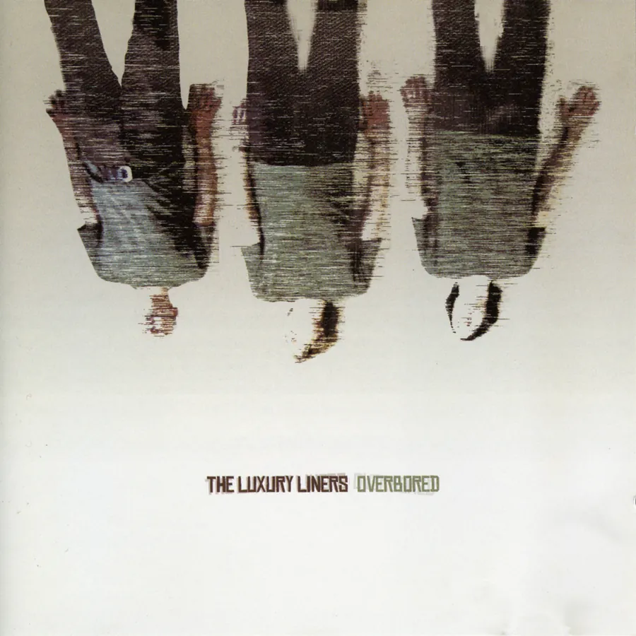
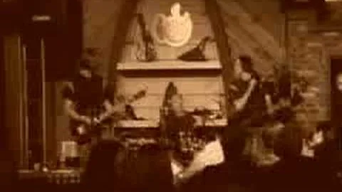

Album · 2003
Overbored
- May 2003
- Litterbug Records
- LLCD1003
- 10 tracks · 36:23
The trio’s first album, played by David Dewese, David “Larry” Wilstermann and Scott Carpenter after Chad left Nashville. Two of its songs went to television.
Tracks
- Sunshine3:05The theme of FOX Sports’ US Youth Soccer Show.
- Restless3:41
- Dreaming4:39Used in One Tree Hill, season 1, episode 15, first shown February 24, 2004.
- Overbored4:12
- Waiting For The Sun3:24
- Woman3:48
- Equasue3:35
- Fifteen Again3:40
- It’s You3:24
- Constellation Invitation2:55
Total time 36:23.
Credits
- David Dewese
- guitar, vocals
- David “Larry” Wilstermann
- bass
- Scott Carpenter
- drums
- Paul Seykora
- keyboards on “Dreaming” and “Woman”
- Recorded by
- Doug Nightwine
- Mixed by
- Chris Henning
- Cover art
- David Dewese
David wrote most of the songs, some of them with Chad, Larry and Scott; Larry wrote “Restless”.
What they said
-
“‘Waiting for the Sun’ … is drop-dead perfect pop-rock (and the best song here) … This is one of my favorites of the year.”
Erik Hage, Metroland, June 2003
-
“Overbored … is a must-have for all power pop fans.”
Performing Songwriter, July 2004
The band’s own one-sheet pitched it as “the perfect CD for traveling up the 5 from San Diego to L.A.”
Equasue on YouTube

Play “Equasue” (loads YouTube)The trio in 2003
More
Chapter 6 of the Story tells how Overbored was made: read the chapter.